Part 1.1
Convolving with the 9x9 box_filter took different amounts of time based on the number of loops. The four loop convolution took 146 seconds, two loop took 21 seconds, and scipy convolve took half a second. These varying times are due to loops being replaced by vectorization. In the two loop function the element-wise multiplication loop is replaced with a vectorized np.sum(f_section*h_flipped). In the scipy function even the loops for each element-wise multiplication operation are vectorized. Below is the box_filter convolved with an image of myself using my two-loop convolve function.
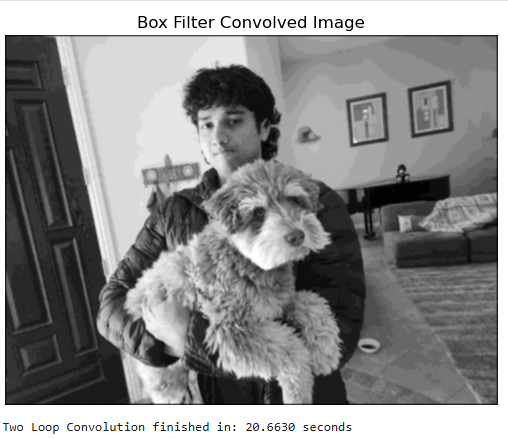
Me and my dog
Part 1.2
Below are the dx, dy, and gradient magnitude for the cameraman image.
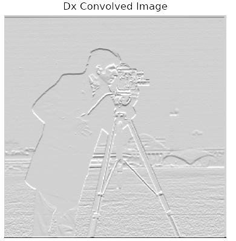
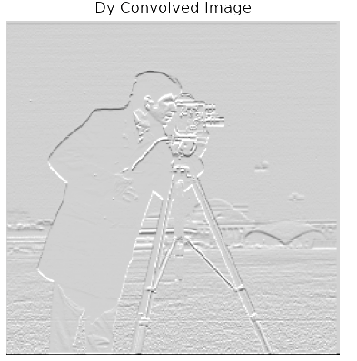
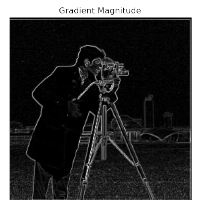
Now we have the binarized edge image showing two differen thresholds. Greater thresholds remove more noise but sometimes get rid of edges.
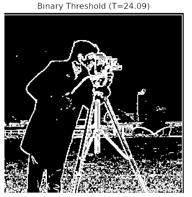
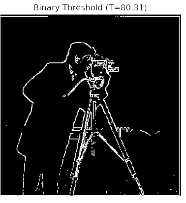
Part 1.3
Below are the DOGx and DOGy kernels.
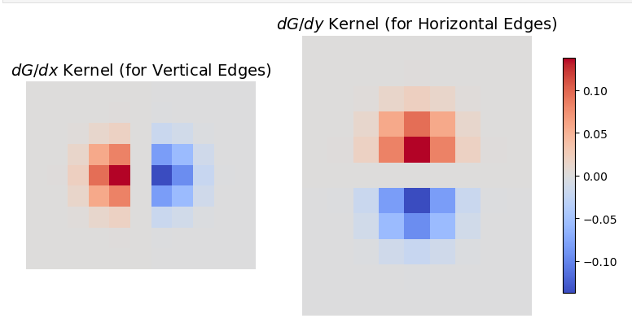
On the left is the finite difference method, on the right we have the DoG method. Binary thresholds are different because they are based on a *1.5 scaling factor in relation to the mean of the image.
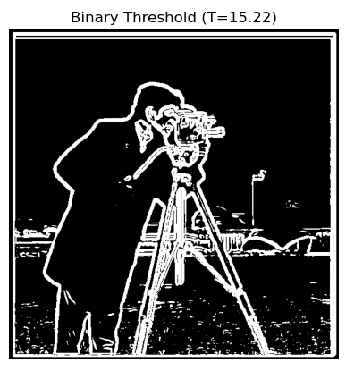
Part 2.1
For unsharp mask I iterated through each color channel seperately. I first found the low frequency values using the gaussian filter and then found the high frequency values by subtracting the low frequencies from the original image. I then readded these high frequencies back into the original image. Below are two examples.
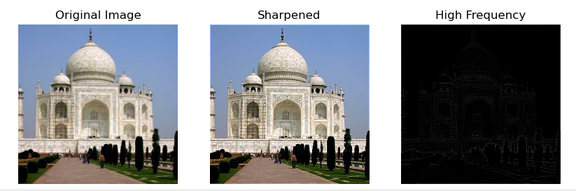
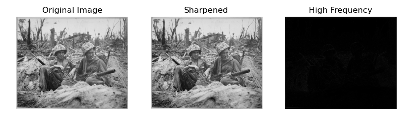
Turning up the sharpening creates a very saturated image. Below is Taj with 8x sharpening
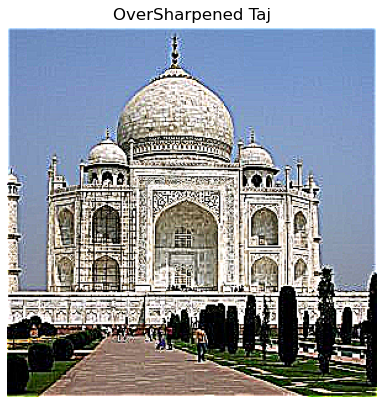
Part 2.2
Below are three hybridized images

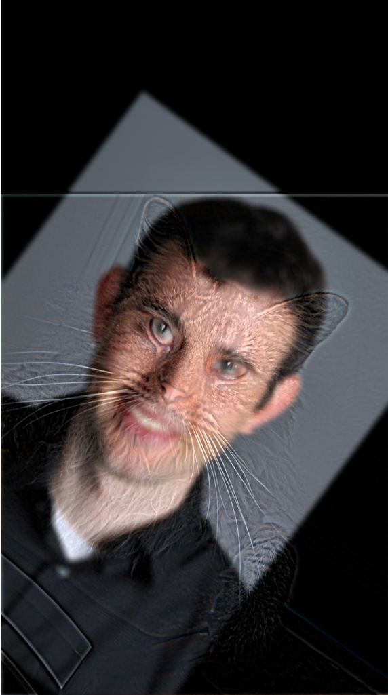
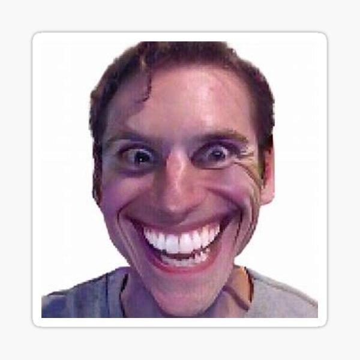
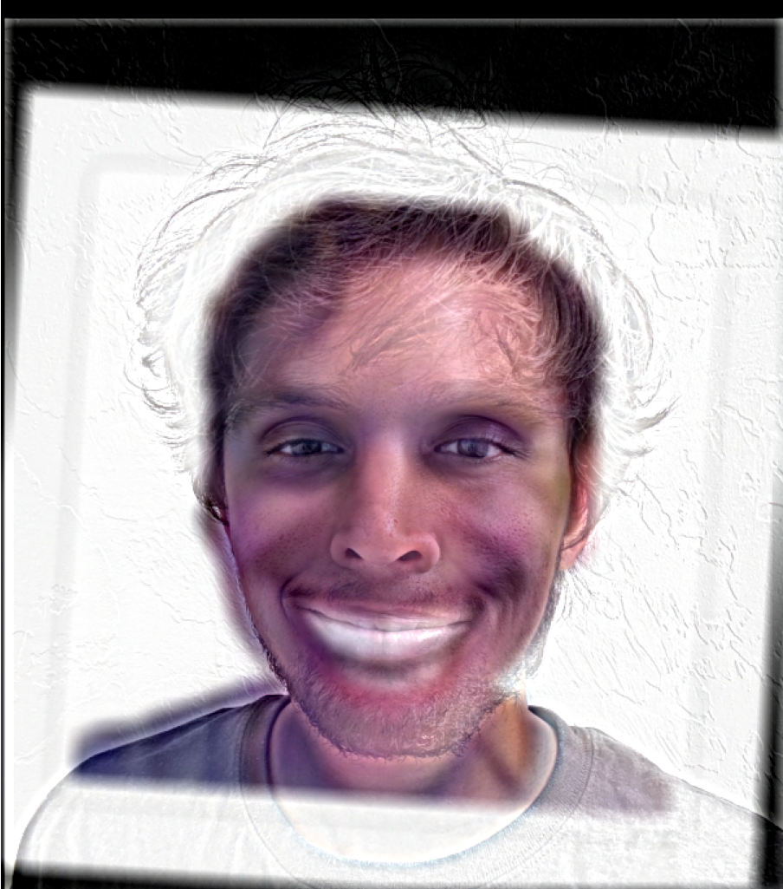
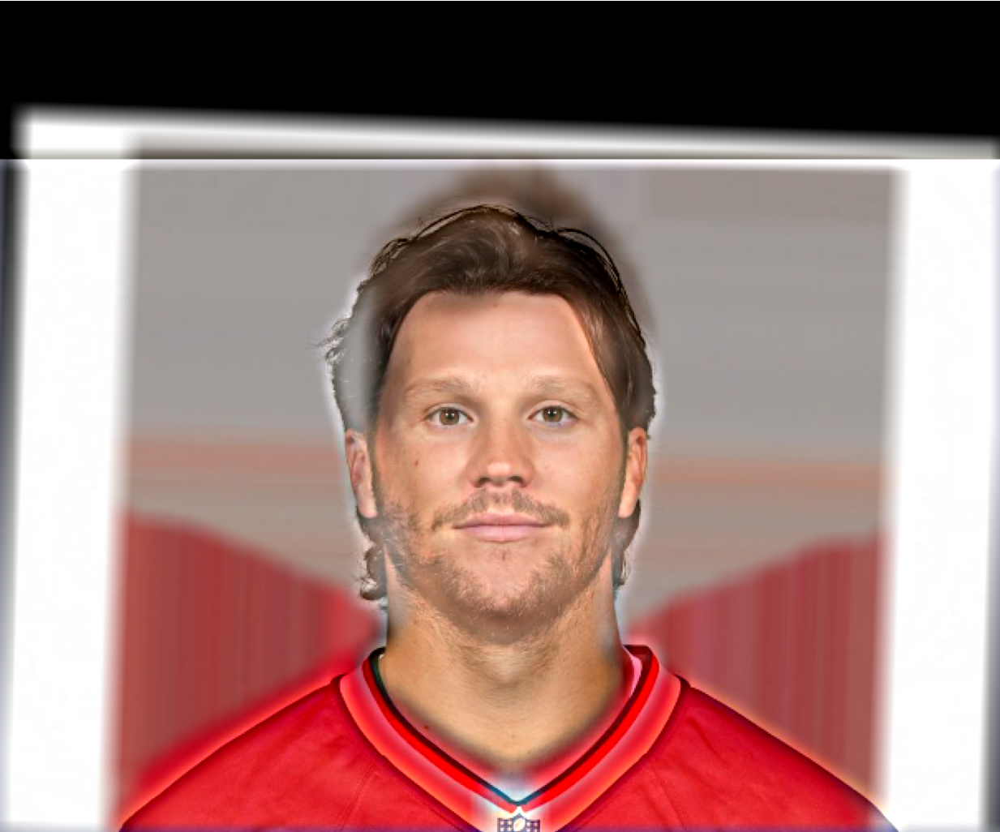
Here is the FFT for the Allen Brady hybrid.
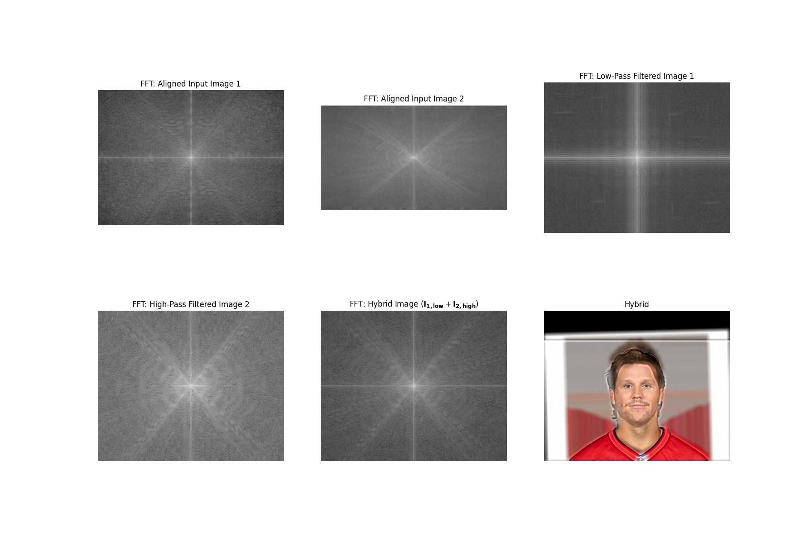
Part 2.3/2.4
Below is the Oraple and the Figure recreation
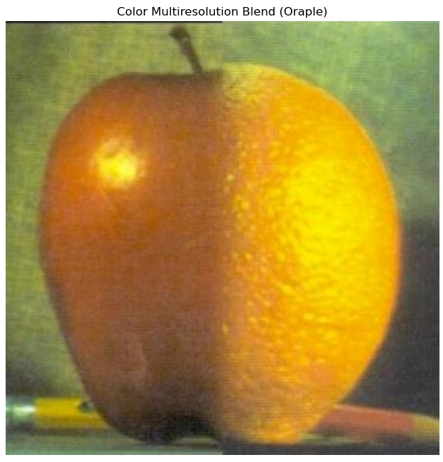
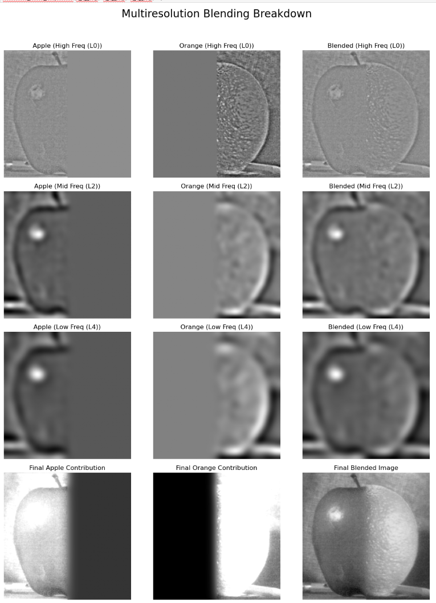
On the left is another blend with a linear mask and on the right is a blend with a checkerboard mask.
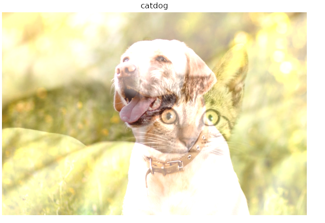